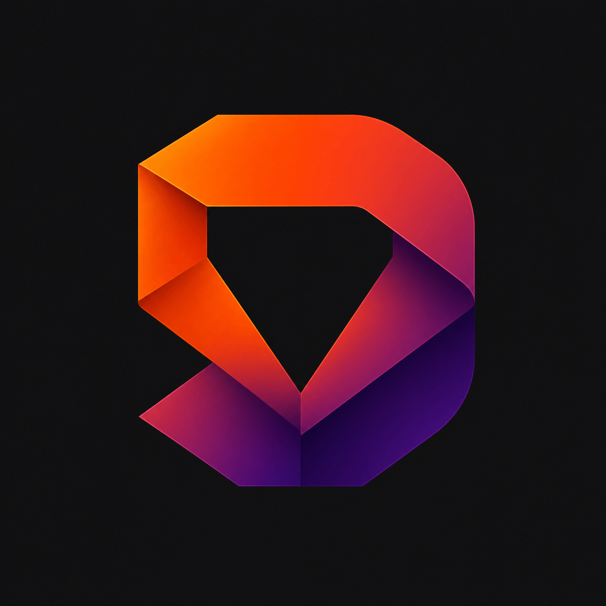
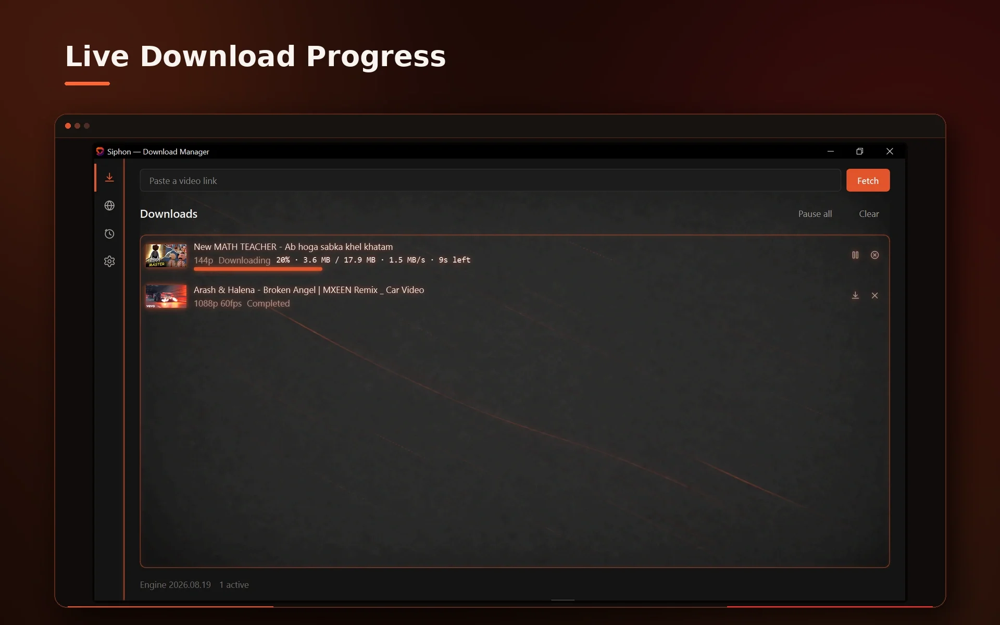
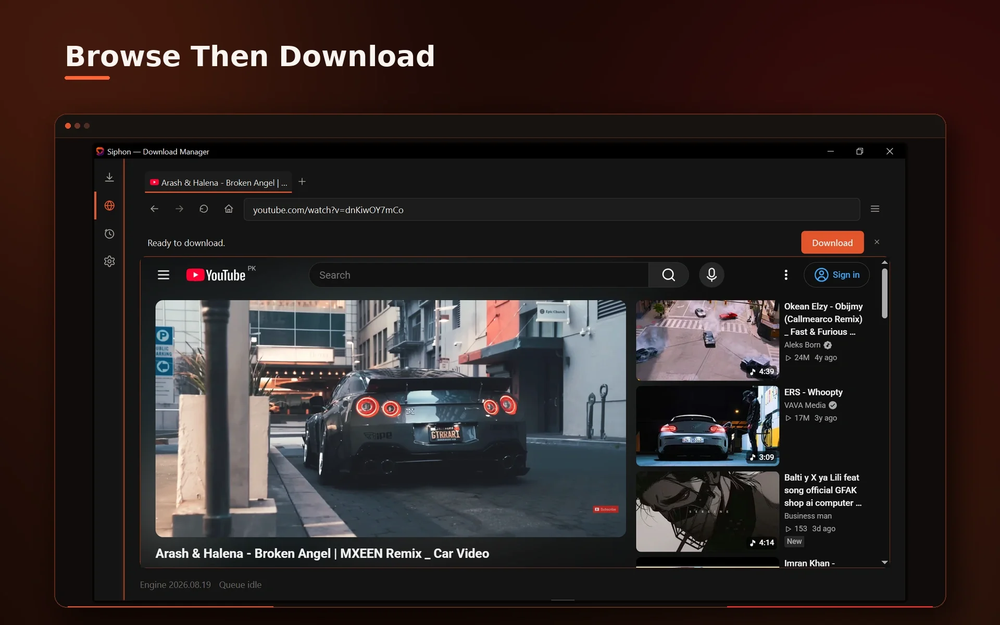
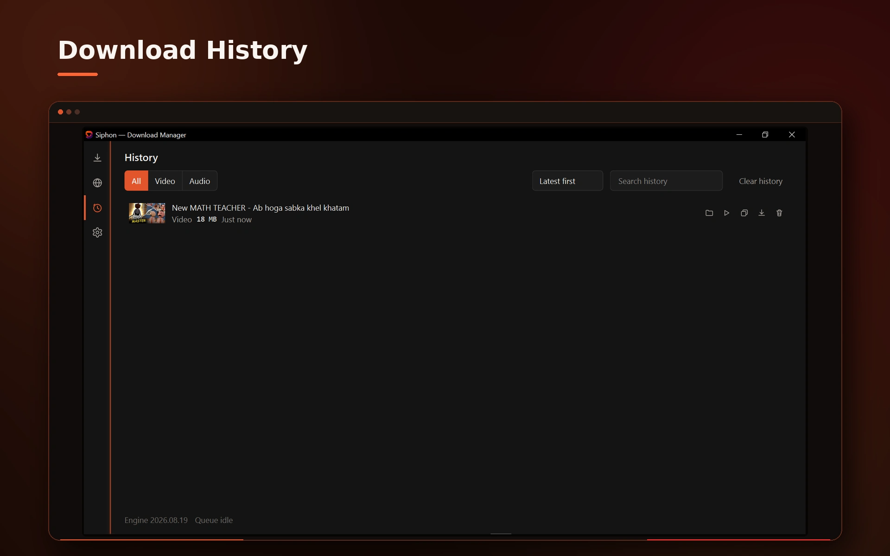

HiTend Digital
HiTend Digital

Live · Windows
Siphon Downloader
A clean, native video downloader for Windows — built on yt-dlp, without the clutter of a browser extension or a cracked emulator workflow.
What Siphon does
Siphon Downloader gives you a proper desktop app for saving videos, instead of routing everything through a browser tab or an Android emulator. Paste a link, pick a quality, and Siphon handles the rest — using yt-dlp under the hood for reliable, wide-ranging site support.
- Automatic quality and format selection, with manual override when you want it
- yt-dlp updates itself in the background, so support for sites stays current
- ffmpeg is bundled — no separate install, no PATH configuration
- Uses your browser's existing cookies when a site needs you to be signed in
- Built-in download history and a playlist picker for multi-video links
Siphon is built and maintained under HiTend Digital, as a lighter alternative to running a full Android emulator just to use a mobile downloader app on a PC.
Screenshots
Inside Siphon




